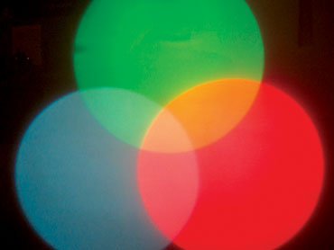
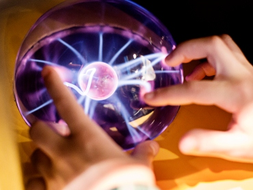
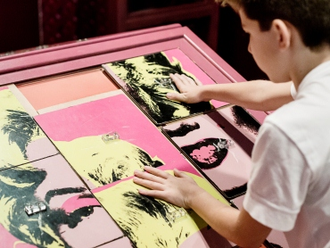
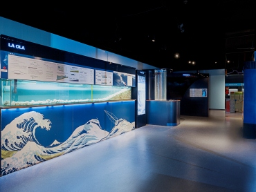

Esta sala nos introduce en el complejo mundo de la luz, los instrumentos ópticos y el sentido de la vista. Un conjunto de exhibiciones interactivas, relacionadas entre sí, conducen al visitante por los principios que rigen el universo de la luz.

La electricidad está presente en todo momento de nuestra vida, desde la iluminación hasta en las comunicaciones. En esta sala, nuestro visitante podrá armar circuitos eléctricos con distintos componentes, experimentar con magnetismo, sentir un shock eléctrico, entre otras aventuras...

En esta sala podrás hacer un recorrido por la historia del arte. Conocer sobre materiales, técnicas, colores, perspectiva y los distintos movimientos artísticos.

Vientos, agua, tormentas y otros fenómenos naturales, que afectan al clima y nuestra vida, son los temas que inspiran a la sala Fuerzas de la Naturaleza.